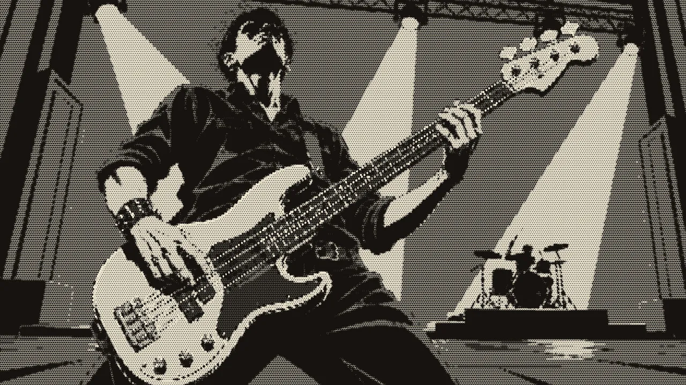
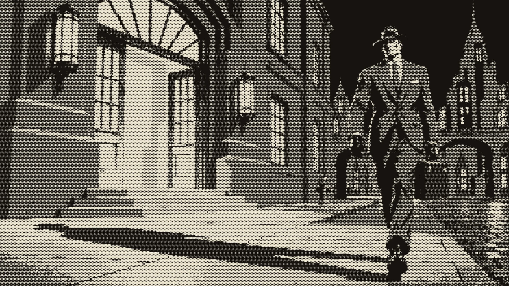
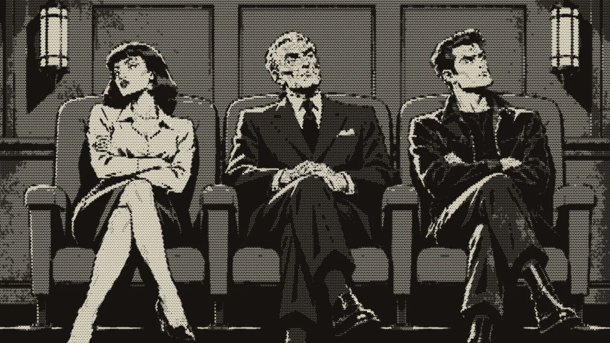
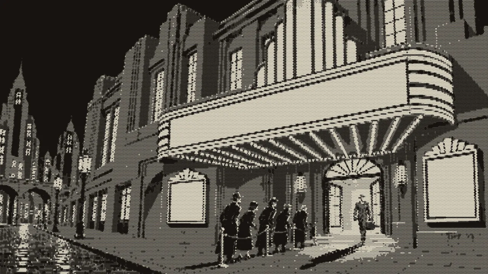
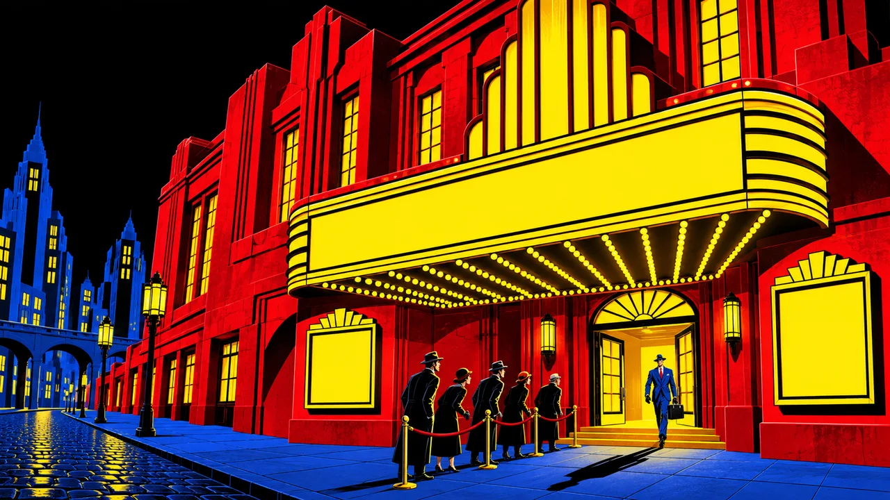
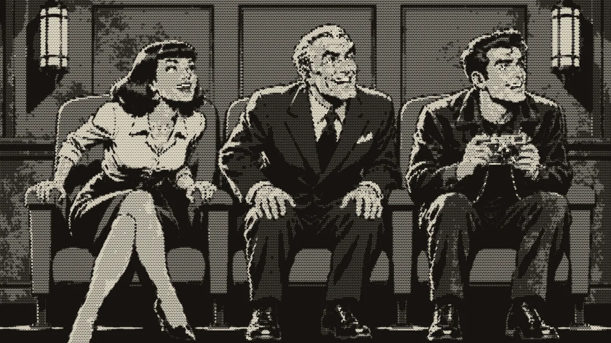
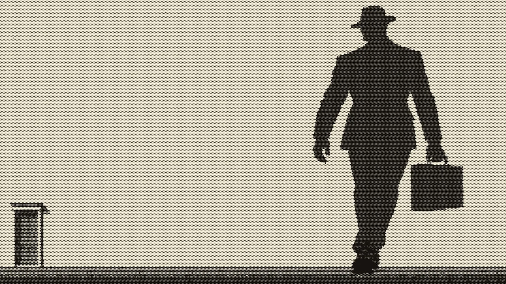

간첩? 스파이?
0:00–0:34 · 인트로 · 간주


0:00–0:34 · 인트로 · 간주

0:34–0:58 · 1절

0:58–1:27 · 프리코러스 · 1절 후렴
1:27–1:43 · 간주
연주만 흐릅니다.
1:43–2:03 · 2절 · 프리코러스


2:03–2:35 · 2절 후렴 · 간주

2:35–2:48 · 브리지

2:48–3:25 · 빌드 · 마지막 후렴
3:25–3:48 · 아웃트로 · 끝